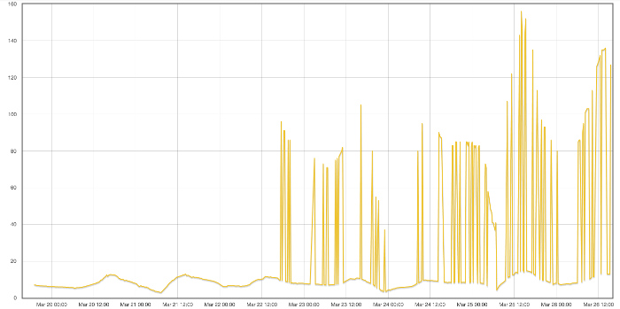
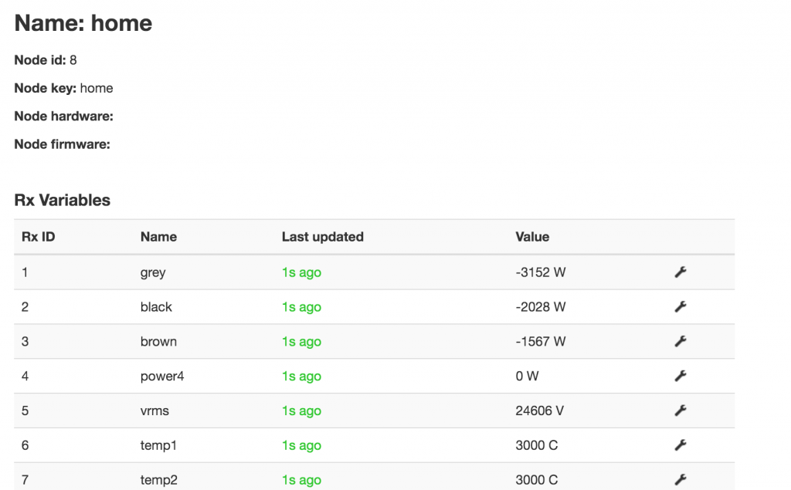

Hi,
I've got a temperature sensor attached to an emonTX3 and it was providing accurate readings when it was powered by the AC adapter. But now I've moved it to a location where it needs to be battery powered and now it periodically provides readings without the decimal place, which obviously then screws up the charting (see sample image).
Anybody have any idea how best to get around this?
I'm using a emonPI to forward this data to a self hosted emonCMS setup running on Linux using the 9.4 2016.03.15 build.
Thanks
Chris

Edit - moved pic to OEM - Moderator, BT
Please upload your image directly to the OEM site, i.e. don't use pictures linked to third party sites
Re: Periodically getting odd temperature readings
"readings without the decimal place"
Are you absolutely certain that is exactly what is happening, or does it just look as if the scaling is about 10 times what you expect?
Which sketch is your emonTx running, and what version emonTx and radio module do you have?
What batteries are you using?
Re: Periodically getting odd temperature readings
I'm absolutely sure that is what is happening, I've got raw records ....I do have two emonTxs and two emonBase stations because the distance between the TXs means they can't always commuicate. I wondered if this could be causing an issue...so I disabled one of the base's and it appears to have resulted in more accurate temperature readings.....
BUT, the VMS recording is then being send without a decimal place....so there must be something wrong in the TX or Base codebase. In the example below from the log you can see the value 24626 for the voltage should actually be 246.26 - the screenshot shows it report on the emoncms (from the emonBase).

I don't have a UART cable to connect the emonTX to check on the sketch version, they were purchased in the last 2 weeks from the online store, so I can only assume they are up to date. If there is a way to tell the version without a UART cable please let me know.
Any ideas greatly received.
Thanks
Re: Periodically getting odd temperature readings
Normally, all values are transmitted as integers. You can download the sketch from Github and look at the code. Powers are sent in watts, voltage is sent as Vrms*100 and temperature as temp*10. So that is neither a mistake nor a fault.
You can also look at the emonhub.conf file where you should see it being corrected by the multiplier constant "scales = 1,1,1,1,0.01,0.1,0.1 ..." etc. So there's some misunderstanding there.
But Node 8 isn't sending the wrong values: I can't see the raw numbers for Node 8, they're cut off the top, but it is showing "3000" as the "failed sensor" value, which should be scaled to 300.0 so it would appear that it is the scaling in emonHub that is wrong (at least in the snip you posted). I think you need to check the scaling for Node 8 in emoncms.conf.
But I've no idea why that should be changing intermittently, unless the two bases - emonPi's - can both receive both nodes and that one emonTx is sometimes received by one and sometimes by the other, and they have different scaling values set.
If you have one node specification in each base, that base will only receive and forward the data from that node.
Re: Periodically getting odd temperature readings
So I found the issue - thank you for your help. Basically I'd set one base up with:
[[7]]
nodename = solar
[[[rx]]]
names = grey, black, brown, power4, vrms, temp1, temp2, temp3, temp4, temp5, temp6, pulse
datacodes = h,h,h,h,h,h,h,h,h,h,h,L
scales = 1,1,1,1,0.01,0.1,0.1, 0.1,0.1,0.1,0.1,1
units =W,W,W,W,V,C,C,C,C,C,C,p
and the other with:
[[8]]
nodename = home
[[[rx]]]
names = grey, black, brown, power4, vrms, temp1, temp2, temp3, temp4, temp5, temp6, pulse
datacodes = h,h,h,h,h,h,h,h,h,h,h,L
scales = 1,1,1,1,0.01,0.1,0.1, 0.1,0.1,0.1,0.1,1
units =W,W,W,W,V,C,C,C,C,C,C,p
But both can see each emonTX occasionally, not always, hence two bases.....without the other config, it still forwards the data on to the emonCMS even for nodes not in the configuration (which strikes me as odd). Anyway, by adding a node 7 and node 8 in both configs, they are both transmitting with the correct scaling factor.
Thank you for your help!
Now I just need to figure out why the 3 CT clips aren't reporting their values correctly, especially when operating in reverse.
Re: Periodically getting odd temperature readings
"Now I just need to figure out why the 3 CTs..."
"names = grey, black, brown..."
That's worrying. You're not trying to measure the real powers of a 3-phase system with a single-phase off-the-shelf sketch, are you? Because you never will. Read the piece in Resources > Building Blocks about 3-phase power.
Re: Periodically getting odd temperature readings
Yes I am but for now I was trying to use apparent rather than real power but it appears like the watts are drastically out for two of the phases.....I know that I'm going to have to add two other TXs and two AC adapters to measure the 3 lines correctly.....was just hoping to see if this worked well enough to start with.....
Re: Periodically getting odd temperature readings
You will get better, but not completely accurate, results with the 3-phase sketch. It uses a 'fiddle' to derive a best guess at the voltages of the two unmonitored phases. If the phase voltages are accurately balanced, it should be fairly close.